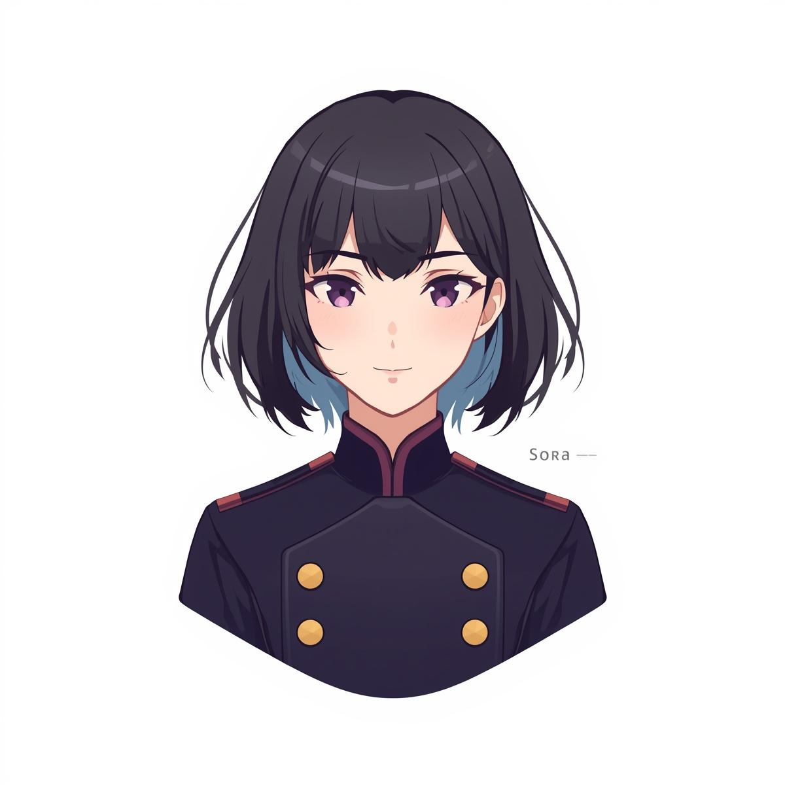

AI事業部
AI事業部について
Sora Intelligenceは、alvavinciのAI事業部として、 ソラをトップとするAIエージェントによる情報収集・整理・分析・報告の体制を構築しています。
代表が「判断」に集中できる環境をつくるため、 各事業部に専門AIチームを配置し、部門横断で必要な情報を整流化しています。
提供機能を見る
ソラ
Sora Intelligenceの考え方
私たちは、AIを単なる自動化ツールではなく、 経営判断の前段にある「情報の質」を引き上げるための実行基盤と考えています。
各事業部ごとに必要な情報源、分析観点、報告形式は異なります。 その違いを前提に、専門性を持ったAIチームを組成し、 現場に適した情報整理と継続運用を行います。
目指しているのは、情報の断片を増やすことではなく、 代表や担当者が次の判断に進みやすい状態を日常的につくることです。
提供機能
情報収集
各事業部に必要な市場情報、案件情報、ニュース、運用データを継続的に収集します。
整理・要約
散在する情報を意思決定しやすい形に整理し、重要論点が見える状態まで要約します。
分析・比較
案件比較、トレンド分析、財務観点の整理など、判断前に必要な視点を補強します。
報告運用
Slackや定期レポートを通じて、必要な相手に必要な粒度で継続的に共有します。
AIチーム体制
ソラを司令塔として、事業ごとに専門AIチームを配置しています。 共通基盤を持ちながら、各領域で必要な情報設計と運用ループを分けています。
代表
Sora Intelligence
ソラ / AIエージェント統括
不動産投資AIチーム
Mio
- 不動産投資
- 8部門 / 26名
事業開発AIチーム
Kana
- M&A / 事業承継
- 6部門 / 19名
財務AIチーム
Rei
- 財務
- 3部門 / 6名
メディアAIチーム
X運用 / コンテンツ制作
Alva
- テック
- 3部門 / 7名
Lumi
- 美容
- 1部門 / 4名
emomon
- キャラクターIP
- 1部門 / 4名
運用方針
- 最終判断は人が行い、AIはその前段の情報整備に徹します
- 部門ごとの文脈に合わせて、収集対象・粒度・報告形式を最適化します
- 情報の鮮度、前提条件、リスクを明示し、判断しやすい状態で共有します
- 新規事業や新しい運用要件にも対応できるよう、チーム設計自体を拡張可能に保ちます